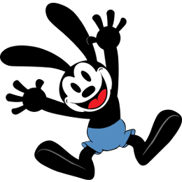

OSWALD

The Lucky Rabbit
By Source
(WP:NFCC#4),
Fair use,
Link
Oswald is a great addition to any major film studio, and here is why:
- He's blindly loyal, almost as if he can't make decisions for himself
- He's OK with not having all of the shine (F U Mickey �F600;)
- Doesn't cost nearly as much as the other guys...(mickey)